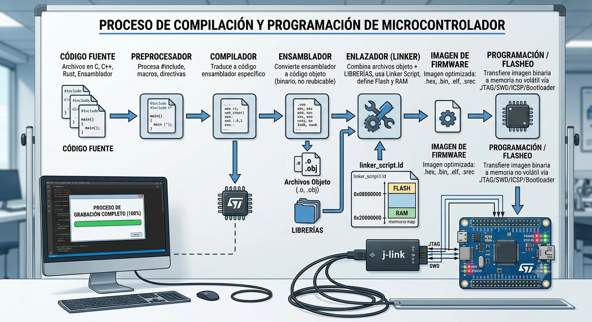
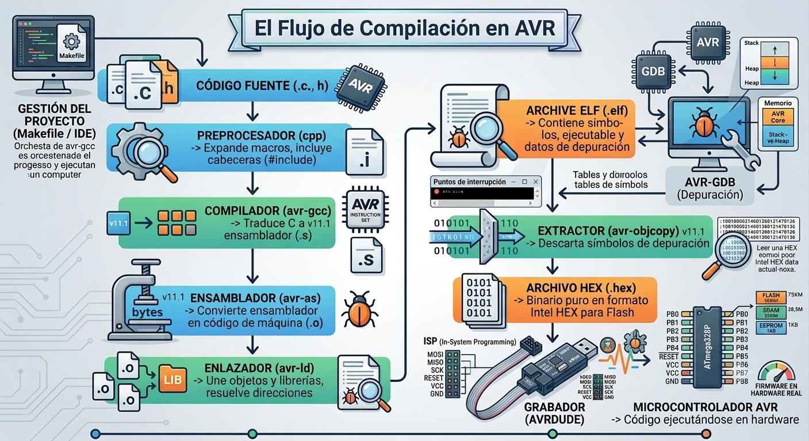
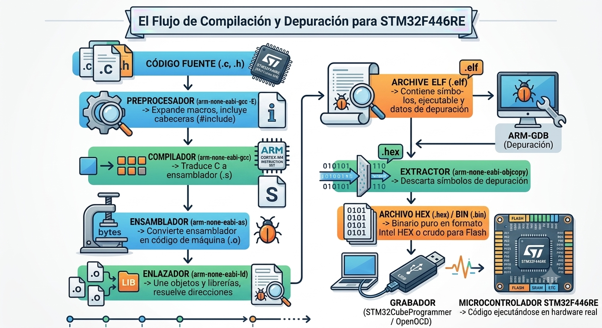

LA COMPILACIÓN DE FIRMWARE EN SISTEMAS EMBEBIDOS
La Compilación Cruzada
INTRODUCCIÓN
En una PC el código se compila de forma nativa; el archivo ejecutable se crea y corre en la misma computadora.
Los equipos linux utilizan como compilador nativo GCC; en Windows el compilador nativo y oficial es MSVC (Microsoft Visual C++). Pero para programar microcontroladores no basta con utilizar el compilador GCC que ya viene instalado en Linux o MSVC que se debe instalar en windows. Debemos recurrir a la compilación cruzada.
Comprender esta diferencia es esencial para desarrollar firmware para microcontroladores como los ATmega, ATtiny, STM32 o ESP32, especialmente si utilizamos una computadora que corre en linux o una Raspberry Pi 5 como estación de desarrollo
1. CONCEPTOS DE HOST Y TARGET
En compilación cruzada aparecen dos términos muy utilizados:
- Host: Es el equipo donde se ejecutan las herramientas de desarrollo.
- Target: Es el dispositivo para el cual se genera el programa.
Ejemplo 1:
- Host: Raspberry Pi 5
- Compilador: AVR-GCC
- Target: ATmega328P
Ejemplo 2:
- Host: PC con Windows
- Compilador: arm-none-eabi-gcc
- Target: STM32F446RE
En ambos casos existe compilación cruzada porque el programa no se ejecutará en el mismo sistema donde fue compilado.
2. LA COMPILACIÓN CRUZADA
Cuando el desarrollo del programa se realiza en una computadora cuya arquitectura es diferente de la del microcontrolador objetivo, se utiliza un compilador cruzado el cual se ejecuta sobre una arquitectura determinada, pero genera código máquina destinado a otra arquitectura diferente; y se requiere una toolchain de compilación cruzada (cross-compilation toolchain). Esta no solo genera código máquina para otra arquitectura, sino que también proporciona el conjunto de herramientas, bibliotecas y utilidades necesarias para construir aplicaciones destinadas al sistema embebido.
Por ejemplo, si utilizamos una Raspberry Pi 5 para desarrollar firmware para un ATmega328P, el compilador que utilizaremos no debe generar instrucciones ARM64, sino instrucciones para un AVR.
En ese caso utilizaremos:
avr-gcc programa.c -mmcu=atmega328pAunque el compilador se está ejecutando sobre un procesador ARM64, el código generado está pensado exclusivamente para un microcontrolador AVR. Precisamente por eso recibe el nombre de compilador cruzado (cross compiler).
Incompatibilidad del compilador GCC estándar con microcontroladores
Muchos piensan que el compilador GCC sirve para compilar cualquier código en C. Esto es un error. El GCC estándar de la estación de trabajo solo crea programas para sistemas operativos de computadora y no sirve para la arquitectura limitada de un microcontrolador. Por esta razón, no basta con usar el compilador común del equipo (host), sino que se necesita un conjunto de herramientas especializado que traduzca el código a la medida exacta del hardware de destino (target).
Aunque el lenguaje C se escribe igual en todos lados, el chip de una computadora (ya sea Intel, AMD o un ARM de una Mac/Laptop moderna) tiene recursos gigantescos. En cambio, el chip de un microcontrolador es diminuto y habla un dialecto totalmente diferente. Una computadora (con chip Intel, AMD o ARM) procesa la información con un sistema operativo completo. Un microcontrolador corre el código directamente en el hardware, es decir en él mismo.
Consideremos el siguiente programa:
#include <avr/io.h>
int main(void)
{
DDRB |= (1 << PB5);
while (1)
{
PORTB ^= (1 << PB5);
}
}
Este programa manipula directamente los registros del ATmega328P. Si intentamos compilarlo con gcc programa.c, obtendremos errores porque:
GCCno conoce la bibliotecaavr/io.h.- Desconoce los registros propios de la arquitectura AVR.
- Genera instrucciones ARM, no instrucciones AVR
En cambio, utilizando
avr-gcc programa.c -mmcu=atmega328pel compilador reconoce la arquitectura AVR, las bibliotecas correspondientes y genera un ejecutable adecuado para el microcontrolador.
3. FUNCIONAMIENTO DE UN COMPILADOR CRUZADO
Un compilador cruzado no solo genera el código máquina para una arquitectura distinta de aquella en la que se ejecuta. También incluye el conjunto de herramientas y recursos necesarios para desarrollar aplicaciones destinadas al microcontrolador objetivo, entre ellos:
- Bibliotecas estándar adaptadas al microcontrolador de destino.
- Archivos de cabecera con la definición necesaria para trabajar con el hardware del dispositivo.
- El ensamblador y el enlazador (linker).
- Scripts de enlazado que describen la distribución de la memoria.
- Herramientas para generar archivos ejecutables y de programación en formatos como ELF, BIN o HEX.
- Utilidades para el análisis, depuración y manipulación de archivos binarios.
El proceso de construcción de un programa para un microcontrolador o, en general, para un sistema embebido, sigue una secuencia de etapas que transforman el código fuente escrito por el desarrollador en un archivo que puede almacenarse en la memoria del microcontroldor de destino.
- Preprocesado: El preprocesador procesa las instrucciones del código fuente, como
#include,#definey las directivas de compilación condicional. En esta etapa se expanden las macros, se incorporan los archivos de cabecera y se prepara el código para la compilación. - Compilación: El compilador traduce el código C a lenguaje ensamblador específico de la arquitectura del microcontrolador de destino (target). Cuando un programa utiliza únicamente construcciones estándar del lenguaje C, el mismo código fuente puede compilarse para distintas arquitecturas, pero el ensamblador generado será diferente en cada una. Sin embargo, en el desarrollo de sistemas embebidos es habitual acceder a registros y periféricos propios del microcontrolador, por lo que el código también suele ser específico de la familia de dispositivos utilizada.
- Ensamblado: El ensamblador convierte las instrucciones del código ensamblador en código máquina binario y genera uno o varios archivos objeto (
.o), que contienen instrucciones binarias aún no listas para ejecutarse como un programa completo. - Enlazado (Linking): El enlazador combina todos los archivos objeto junto con las bibliotecas necesarias, el código de inicialización del sistema (startup code) y otros elementos específicos de la plataforma, como la tabla de vectores de interrupción cuando la arquitectura la requiere. Asimismo, organiza las distintas secciones del programa (código, datos, variables inicializadas y no inicializadas) de acuerdo con el mapa de memoria definido para el dispositivo. El producto final es un archivo en formato ELF (Executable and Linkable Format,
.elf). Aunque en microcontroladores se suele extraer de este un archivo binario puro (.bin o .hex) para grabarlo en la Flash, el ELF se denomina ejecutable porque contiene formalmente la estructura completa del programa —segmentos de código, datos y símbolos de depuración— organizada para que el sistema o las herramientas de desarrollo lo reconozcan listo para funcionar y sepa cómo ubicarlo en la memoria y empezar a correrlo. - Generación de la imagen de programación: A partir del archivo ELF se generan los archivos que serán grabados en la memoria no volátil del dispositivo. Dependiendo de la herramienta y de la plataforma, estos pueden estar en formato Intel HEX (
.hex), Motorola S-Record (.srec) o binario puro (.bin), entre otros. - Programación del dispositivo: Finalmente, una herramienta de programación transfiere la imagen generada a la memoria Flash (o a otro tipo de memoria no volátil) del microcontrolador mediante interfaces como JTAG, SWD, ISP, ICSP, UART, USB o un bootloader, según las capacidades del hardware de destino.

El proceso de construcción de un programa es prácticamente el mismo para la mayoría de los microcontroladores, ya sean AVR, ARM Cortex-M (STM32, NXP, Nordic, etc.), PIC, MSP430 o RISC-V. Todas estas arquitecturas siguen las mismas etapas fundamentales: preprocesado, compilación, ensamblado, enlazado y generación de la imagen final que será grabada en la memoria Flash.
Lo que cambia entre una arquitectura y otra es el código que produce el compilador, las bibliotecas utilizadas, el código de inicialización (startup code), el script de enlazado (linker script) y, en algunos casos, el formato del archivo que finalmente se programa en el microcontrolador.
Por ejemplo:
| Etapa | AVR | STM32 (ARM Cortex-M) | PIC |
|---|---|---|---|
| Preprocesado | Igual | Igual | Igual |
| Compilación | Genera ensamblador AVR | Genera ensamblador Thumb-2 | Genera ensamblador PIC |
| Ensamblado | Código máquina AVR | Código máquina ARM | Código máquina PIC |
| Enlazado | Une objetos y librerías AVR | Une objetos, CMSIS, startup y linker script | Une objetos y librerías PIC |
| Imagen final | .hex (habitualmente) |
.elf, .bin o .hex |
.hex |
Aunque el flujo general de compilación es el mismo, la etapa de enlazado presenta diferencias importantes entre las distintas arquitecturas de microcontroladores, principalmente debido a la forma en que cada una organiza su memoria y realiza la inicialización del sistema.
-
AVR: El código de inicio (startup code) es relativamente sencillo y, por lo general, lo proporciona la biblioteca
avr-libc. Su función es inicializar las variables globales y estáticas, limpiar la sección.bssy, finalmente, transferir el control a la funciónmain(). -
ARM Cortex-M (STM32): El proceso es más complejo. Intervienen un archivo de inicio, normalmente denominado
startup_stm32xxxx.s, un script de enlazado (linker script,.ld) y las bibliotecas del fabricante o CMSIS. Durante el arranque se configura el puntero de pila (stack pointer), se instala la tabla de vectores de interrupción, se copia la sección.datadesde la memoria Flash hacia la RAM, se inicializa la sección.bssy, finalmente, se invoca amain(). - PIC: Microchip proporciona su propio código de inicio, bibliotecas y archivos de configuración adaptados a cada familia de microcontroladores. Aunque los detalles internos difieren de AVR y ARM, el objetivo es el mismo: preparar el entorno de ejecución antes de que comience la ejecución del programa principal.
Función del enlazador y el Linker Script
El enlazador es el encargado de organizar la estructura interna del programa dentro de la memoria física del chip. Mediante un archivo de configuración denominado Linker Script (archivo .ld), el enlazador define exactamente en qué direcciones de memoria se ubican el código, las constantes, las variables globales, la pila (stack) y el área de memoria dinámica (heap).
Diferencia entre archivos ELF y HEX
El archivo ELF es el resultado estructural completo de la compilación. Contiene las secciones de memoria, nombres de funciones, tablas de símbolos y la información de depuración necesaria para herramientas como GDB.
El archivo HEX o BIN es simplemente una extracción simplificada del ELF que contiene únicamente los bytes puros que se van a grabar en la Flash del chip. Por este motivo, para depurar código se utiliza el archivo ELF, mientras que para grabar el chip se usa el HEX o BIN.
El archivo HEX o BIN debe grabarse de forma permanente en la memoria Flash usando un programador físico (como un ST-Link, J-Link o USBasp) o un bootloader. Una vez grabado, el código queda almacenado ahí y el chip empieza a ejecutarlo en cuanto recibe energía.
4. COMPILADORES CRUZADOS HABITUALES
Dependiendo de la arquitectura del microcontrolador se utilizan distintas cadenas de herramientas[cite: 1]:
| Compilador | Arquitectura destino |
|---|---|
avr-gcc |
AVR (ATmega, ATtiny) |
arm-none-eabi-gcc |
ARM Cortex-M |
riscv-none-elf-gcc |
Microcontroladores RISC-V |
xtensa-esp32-elf-gcc |
ESP32 basados en Xtensa |
Todos ellos derivan del proyecto GNU Compiler Collection (GCC), pero cada uno está configurado para generar código máquina para una arquitectura diferente y acompañado por las bibliotecas y herramientas específicas de su plataforma[cite: 1].
5. TOOLCHAIN PARA MICROCONTROLADORES AVR
Para un microcontrolador AVR, la toolchain de compilación suele estar formada por las siguientes herramientas:
avr-gcc: compilador de C y C++ para microcontroladores AVR.avr-libc: implementación de la biblioteca estándar de C y cabeceras específicas para AVR.avr-ld: enlazador que une los archivos objeto y las bibliotecas para generar el archivo ejecutable.avr-objcopy: convierte el archivo ejecutable (.elf) en formatos como.hex, utilizados para programar el microcontrolador.avr-size: muestra el tamaño de las distintas secciones del programa, como código y datos.avr-ar: crea y administra bibliotecas estáticas.
Todas estas herramientas trabajan conjuntamente para generar el firmware que posteriormente será grabado en el microcontrolador.
Una vez finalizada la compilación, el firmware se graba en el microcontrolador mediante un programador. Para ello se utilizan normalmente las siguientes herramientas:
USBasp: programador de hardware muy utilizado para microcontroladores AVR.AVRDUDE: software encargado de transferir el archivo.hexal microcontrolador y de configurar parámetros como los fusibles (fuses).ISP (In-System Programming): interfaz utilizada para programar el microcontrolador sin retirarlo de la placa.

6.TOOLCHAIN PARA MICROCONTROLADORES STM32
Para un microcontrolador STM32F446RE, la toolchain de compilación suele estar formada por:
arm-none-eabi-gcc: compilador de C y C++ para microcontroladores ARM.arm-none-eabi-as: ensamblador que convierte el código ensamblador en código objeto.arm-none-eabi-ld: enlazador que une los archivos objeto y las bibliotecas para generar el ejecutable.arm-none-eabi-ar: crea y administra bibliotecas estáticas.arm-none-eabi-objcopy: convierte el archivo ejecutable (.elf) en formatos como.bino.hex.arm-none-eabi-size: muestra el tamaño de las distintas secciones del programa.newlibonewlib-nano: implementación de la biblioteca estándar de C para sistemas embebidos.
Todas estas herramientas trabajan conjuntamente para generar el firmware que será ejecutado por el microcontrolador.
Una vez finalizada la compilación, el firmware se graba en el STM32 mediante un programador o depurador. Para ello se utilizan normalmente las siguientes herramientas:
ST-LINK: programador y depurador de hardware que se comunica con el microcontrolador.OpenOCD: software que controla el ST-LINK y permite programar y depurar el microcontrolador.STM32CubeProgrammer: herramienta oficial de STMicroelectronics para grabar, verificar y administrar la memoria del microcontrolador.SWD (Serial Wire Debug): interfaz física de comunicación utilizada por el ST-LINK para programar y depurar el STM32.

CONCLUSIONES
- En la compilación nativa, el compilador produce un programa para la misma arquitectura donde se está ejecutando. Es el caso del comando gcc utilizado para crear aplicaciones que funcionarán directamente en una Raspberry Pi o en un PC.
- En la compilación cruzada, en cambio, el compilador se ejecuta en un equipo anfitrión (host), pero genera código para una arquitectura distinta, denominada target. Este es el modelo habitual en el desarrollo de firmware para microcontroladores, donde herramientas como AVR-GCC o arm-none-eabi-gcc permiten crear programas para dispositivos que no podrían compilar su propio código.
- Comprender esta diferencia facilita entender por qué existen distintas cadenas de herramientas para cada familia de microcontroladores y por qué instalar únicamente gcc no es suficiente cuando se trabaja con sistemas embebidos.
Hasta aquí hemos desarrollado teóricamente la compilación del firmware para microcontroladores ¿como es el proceso en la práctica?. Navega en el menú y escoge el microcontrolador que usarás en tu proyecto.